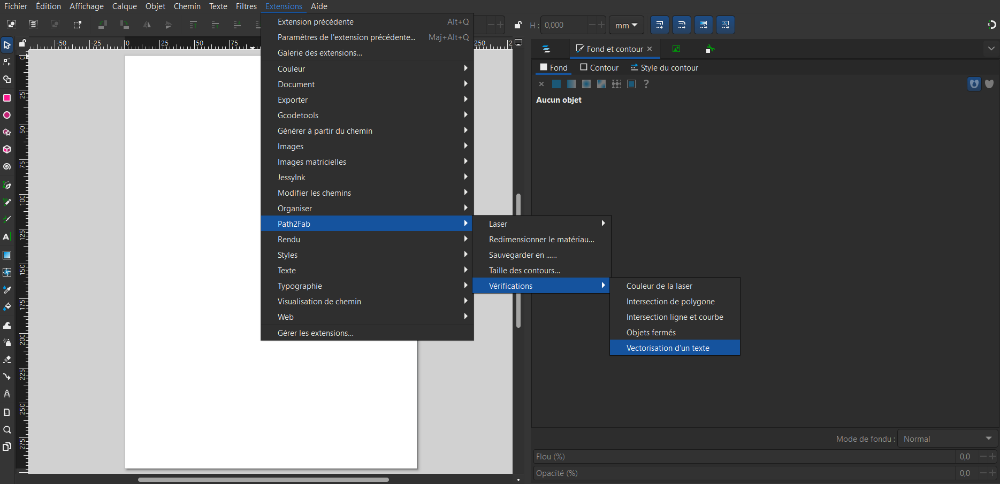

La vérification de fichier
Formes fermées
Assurez-vous que toutes les formes utilisées pour la découpe sont bien fermées.
Formes isolées
Évitez les éléments seuls non reliés ou oubliés sur le plan de travail.
Intersections
Vous avez plusieurs types d'intersection, l'extention les gère différemments.
Pour les lignes droites:

Pour les courbes :

Vectorisation du texte
Les textes non vectorisés ne sont pas compris par la laser. Alors il faut bien penser à les vectoriser. Notre extension vous permet de vérifier tous les textes.
 Si vos textes sont en rouge encadré, cela veut dire qu'ils ne sont pas vectorisé !Un exemple du retour :
Pour mettre votre objet en chemin

Vérification des couleurs
Utilisez des couleurs précises selon la machine (ex. : Rouge = découpe, Bleu = gravure, Noir = balayage).
Aide à la réalisation
Mode de la laser
Le logiciel de découpe laser cut est un logiciel permettant de passer du dessin à la réalité.
Il ne comprends que certaines couleurs qui permet de gérer les différents mode de découpe.
Il vous faudra donc utiliser ces couleurs ci-dessous

Epaisseur des contours
Pour simuler la taille du laser de découpe sur le dessin, vous pouvez changer la taille des contours.
Pour finir vous pouvez appliquer définitivement la taille sur appliquer puis quitter ou alors quitter directement et le ou les objets ne changeront pas.
Enregistrement du fichier
Vous pouvez enregistrer votre fichier dans les formats suivants :
- DXF-12
- SVG
Étapes pour l'enregistrement :

Ensuite, sélectionnez le format souhaité :
Support
Si vous avez des questions ou des problèmes, consultez le dépôt GitHub ou contactez le support technique.